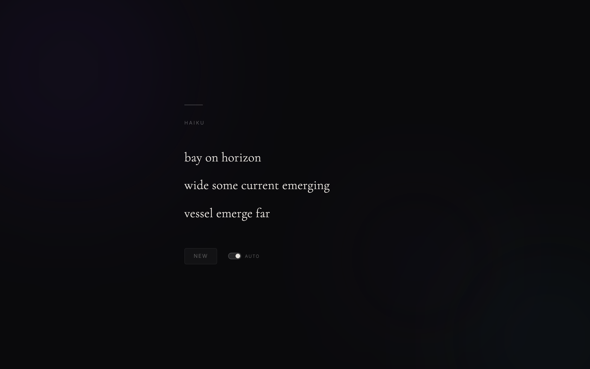

I wanted a screensaver that wrote poetry. Not well, necessarily, but with correct structure and at least a passing resemblance to something a person might say. The result is an ambient haiku generator that produces a new poem every eight seconds, cross-fading between them over a slow-shifting gradient background. You open the page and leave it running. It never stops.

.jpg){kind=link}
The core problem with generating haiku is the syllable constraint: three lines of 5, 7, and 5 syllables. If you just pick random words and try to add them up, you almost never land on exactly the right count. And even when you do, the result reads like a word salad. The generator needed two things: a way to enforce syllable budgets exactly, and a way to produce output that reads like a poem rather than a random selection of words.
Context-free grammar
The generator uses a context-free grammar with role-specific production rules for each line. Line 1 expands scene-setting noun phrases. Line 2 requires a verb phrase to carry the action or observation across 7 syllables. Line 3 resolves with closing imagery. Phrase-level rules (scene_np, verb_phrase, close_phrase) give the grammar structural variety so that poems don't all follow the same adjective-noun, noun-verb-adjective, verb-noun skeleton.
The word bank is a JSON file containing 600+ words classified by grammatical role and syllable count. When the grammar needs a two-syllable noun, it indexes directly into that bucket rather than scanning the whole vocabulary. This makes the syllable constraint cheap to enforce during expansion.

{kind=link}
Thematic coherence
Early versions picked words from a single undifferentiated pool. The poems were grammatically correct and metrically valid but felt random. A haiku about snow would suddenly mention the ocean in line 2 and a forest in line 3.
The fix was to organize the vocabulary into eight nature themes: winter, spring, summer, autumn, ocean, mountain, night sky, and forest. Each theme has its own pool of preferred words organized by part of speech. The generator picks one theme per poem and draws exclusively from that theme's vocabulary, falling back to a general pool (words of 3 syllables or fewer that work across themes) only when the theme pool can't satisfy the remaining syllable budget. The result is that all three lines share a consistent atmosphere.
Deduplication
Repetition kills the illusion. If the same noun appears in lines 1 and 3, or the same determiner opens every line, the output feels mechanical. The generator tracks used words across all three lines and rejects duplicates during expansion. This includes stem-level conflicts: if "drift" appeared in line 1, "drifting" is blocked in line 3. Determiners are deduplicated separately to avoid patterns like "the X / the Y / the Z." A/an agreement is enforced automatically based on the following word's initial sound.
The ambient part
A new haiku generates every 10 seconds, or immediately when you click "New." An "Auto" toggle pauses or resumes the cycle. Transitions use staggered per-line animations: the old poem blurs out, the new one reveals downward line by line. The background is an animated CSS gradient cycling through purple, blue, and teal. The haiku text sits in a frosted-glass card using backdrop-filter: blur.
Two files: one HTML page and one JSON word bank. No build step, no dependencies, no framework.